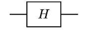
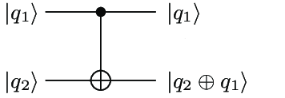
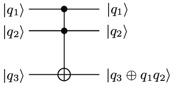

Welcome to Math for Machine Learning!
Linear Algebra, Session
6 — Tensors and Quantum Computers
Mesch
X/Google, 2021
Tensor Product Spaces in Quantum Computing
How the dimension of tensor spaces grows with the number of factor
spaces, and the consequences for Quantum Computing.
Tensor Product Spaces in Quantum Computing — Overview
Plan for today.
- Recap Quantum Mechanics
- Qubits, the simplest possible quantum systems
- Tensor products of qubits
- Quantum Parallelism, in circuits for multiple qubits
- Wrap up
- Colab exercises
and discussions in breakout rooms
Quantum Mechanics
The actual physics is more complicated, and the history of why those
postulates lead to a correct mathematical description of physics is
longer than can be recapped in a slide!
Postulates that shape the mathematical description of
physical reality. The concrete realization in actual Physics is much
more complicated.
- State space.
- Time evolution.
- Measurements.
- The state space of a composite system.
Quantum Mechanics
State space
- Any physical system is associated with a Hilbert space
(vector space with scalar product) aka the state space.
- The
state of this system is a unit vector $\ket{\psi}$ from
the state space.
Quantum Mechanics
Time evolution
- Time evolution of a closed physical system is a
unitary transformation of the state vector $U\ket{\psi}$.
- Time evolution follows the
Schrödinger equation:
$$i \hbar \frac{\partial\ket{\psi}}{\partial t} = H \ket{\psi}$$
The equation relates the rate of change of the state to the
action of an Hermitian operator, the Hamiltonian on the
state.
Quantum Mechanics
Measurement
- Measurements of values $m$ of a physical property
correspond to a set of operators ${M_m}$.
- Probability to measure value $m$ of the system is
$$p(m) = \bra{\psi} M_m^\dagger M_m \ket{\psi}$$
i.e. the scalar product of the result of measurement operator on
state with itself.
- State after measurement is
$M_m\ket{\psi}$
normalized to unit vector:
$$\frac{M_m\ket{\psi}}{\sqrt{\bra{\psi} M_m^\dagger M_m \ket{\psi}}}$$
- The measurement operators are complete
$$\sum_m M_m^\dagger M_m = 1$$.
- The definition of measurement is more general than
usually used.
- More common: Projective Measurements (Observables), Positive
Ooperator Valuad Measure (POVM)
Quantum Mechanics
Composite Systems
- The state space of a composite system is the tensor
product of the state spaces of the component systems.
Qubits
Qubits are the algebraically simplest quantum systems.
- Two dimensional state space, spanned by two base
states $\ket{0}$ and $\ket{1}$.
- Scalar product $\braket{i|j} = \delta_{ij}$.
- Thus $\ket{0}$ and
$\ket{1}$ is an orthonormal basis.
- Consider only other orthonormal bases, thus all coordinate
transformations are unitary.
- A qubit can be in any state $\psi_0 \ket{0} +
\psi_1 \ket{1}$
- Evolution is described by discrete application of
unitary operators $U$ called quantum gates. Unitary operators
are given by coordinate matrices $U_{ij}$:
|
$$\ket{\psi^\prime} = U\ket{\psi}$$
|
$$\ket{\psi^\prime} = \sum_i \psi^\prime_i \ket{i}$$
|
$$\psi^\prime_i = \sum_j U_{ij} \psi_j$$
|
Qubits
Measurement.
- Values of a qubit are associated with the computational
base, 0 and 1.
- Measurement operators are $\ket{0}\bra{0}$ and
$\ket{1}\bra{1}$, i.e. projections on the computational base.
Quantum Computation
Quantum computation is the manipulation of qubits with
computational operators.
- The point is to do this for more than just one qubit at a
time. Thus, composition of qubits.
- What is the state of a quantum computer with multiple qubits?
- The tensor product of the state of multiple qubits.
- And linear combinations thereof.
- What is an operation of a quantum computer?
- A unitary operator (which evolves the system) applied
to the state.
- Also called quantum gate.
2 Qubits
- Two qubit basis:
$$\ket{00}, \ket{01}, \ket{10}, \ket{11}$$
- The system is always in a linear combination of these basis
states.
$$\ket{\psi} = \psi_{00}\ket{00} + \psi_{01}\ket{01} +
\psi_{10}\ket{10} + \psi_{11}\ket{11}$$
- 4 dimensional state space
- Unitary operators are described in terms of the effect on each
of the base states, as usual, i.e. as a 4x4 matrix.
2 Qubits — Entanglement
- State:
$$\ket{\psi} = \psi_{00}\ket{00} + \psi_{01}\ket{01} +
\psi_{10}\ket{10} + \psi_{11}\ket{11}$$
- Sometimes this is just the tensor product of single
qubit states:
$$\ket{a}\ket{b} = \ket{ab} = a_0 b_0 \ket{00} + a_0 b_1 \ket{01} +
a_1 b_0 \ket{10} + a_1 b_1 \ket{11}$$
- In general, however, it might not.
- That situation is called Entanglement.
- Notice entanglement doesn't happen in the cartesian
product of vector spaces: Every cartesian product is a combination
(addition) of two vectors from the factor spaces.
3 Qubits
- Three qubit basis:
$$\ket{000}, \ket{001}, \ket{010}, \ket{011}$$
$$\ket{100}, \ket{101}, \ket{110}, \ket{111}$$
- The system is always in a linear combination of these
basis states.
- 8 (not 6) dimensional state space
- Unitary operators are described in terms of the effect on each
of the base states, as usual, i.e. as an 8x8 matrix (not 6x6).
Quantum Gates
Examples for quantum gates on 1,2,3 qubits
- 1 Qubit — Hadamard $H$:
$$\ket{0} \rightarrow \frac{1}{\sqrt{2}}(\ket{0} + \ket{1})$$
$$\ket{1} \rightarrow \frac{1}{\sqrt{2}}(\ket{0} - \ket{1})$$
- Notation:

Quantum Gates
Examples for quantum gates on 1,2,3 qubits
- 2 Qubits — Controlled Not:
$$\ket{00} \rightarrow \ket{00}$$
$$\ket{01} \rightarrow \ket{01}$$
$$\ket{10} \rightarrow \ket{11}$$
$$\ket{11} \rightarrow \ket{10}$$
- Notation:

Quantum Gates
Examples for quantum gates on 1,2,3 qubits
- 3 Qubits — Toffoli:
$$\ket{000} \rightarrow \ket{000}$$
$$\ket{001} \rightarrow \ket{001}$$
$$\ket{010} \rightarrow \ket{010}$$
$$\ket{011} \rightarrow \ket{011}$$
$$\ket{100} \rightarrow \ket{100}$$
$$\ket{101} \rightarrow \ket{101}$$
$$\ket{110} \rightarrow \ket{111}$$
$$\ket{111} \rightarrow \ket{110}$$
- Notation:

Quantum Parallellism
This is why Quantum Computing is interesting.
| 2 Qubits — integer function $f$:
$$\begin{array}{l}
\ket{00} \rightarrow \ket{0,f(0)} \\
\ket{01} \rightarrow \ket{0,1 +_2 f(0)} \\
\ket{10} \rightarrow \ket{1,f(1)} \\
\ket{11} \rightarrow \ket{1,1 +_2 f(1)}
\end{array}$$
$$\ket{x,y} \rightarrow \ket{x,y +_2 f(x)}$$
| Apply this to:
$$(H\ket{0}) \ket{0} = \frac{\ket{0} + \ket{1}}{\sqrt{2}} \ket{0}
= \frac{\ket{00} + \ket{10}}{\sqrt{2}}$$
|
|
yields:
$$\frac{1}{\sqrt{2}}(\ket{0, f(0)} + \ket{1, f(1)})$$
|
Quantum Parallellism
This is why Quantum Computing is interesting:
$$\frac{1}{\sqrt{2}}(\ket{0, f(0)} + \ket{1, f(1)})$$
- This "computes" $f$ for all input values simultaneously.
- When done with $N$ argument qubits of an n-ary function, computes
$f$ for $2^N$ values simultaneously.
- Root cause that quantum computing is expected to be more powerful
than classical computing.
- Caveat: the function values cannot all
be measured. But they can serve as input to subsequent
operations.
Wrap up
- Tensor product spaces have dimension of the product of
each of their factors.
- Used to describe multiple qubits in Quantum Computing.
- Gives rise to entanglement.
- This is ultimately what underlies expected power of QC to
solve in sub-exponential time what would take exponential time in
classical computing.
- Read
More: Quantum
Computation and Quantum Information
- Work through the
brief colab.
Next
- We look at eigenvectors, and also at applications of tensors in
Machine Learning models.